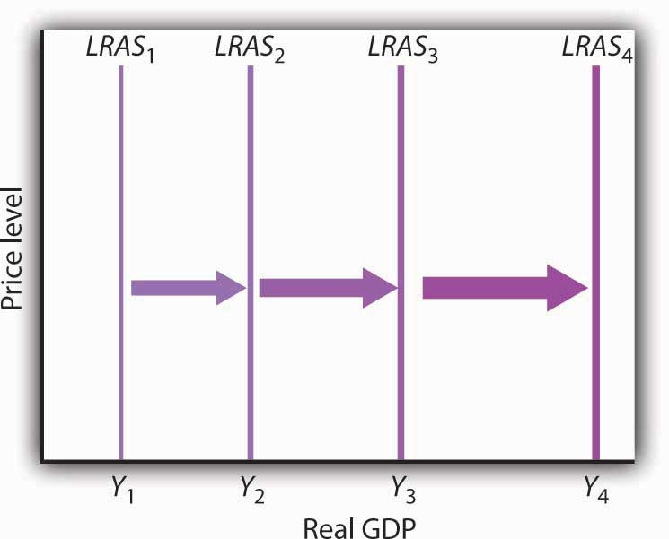
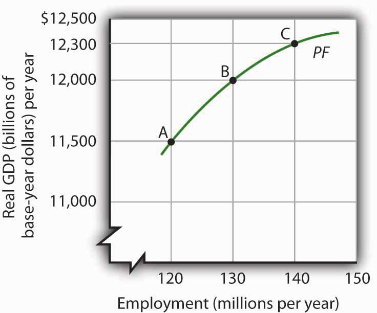
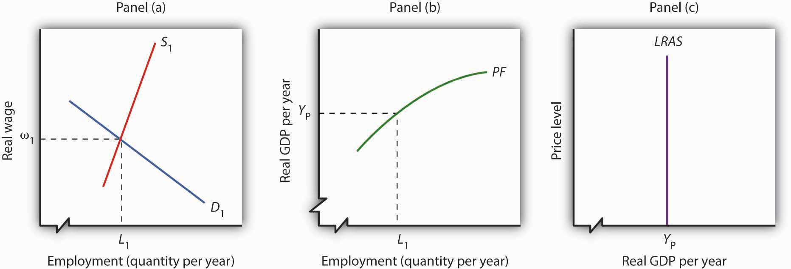
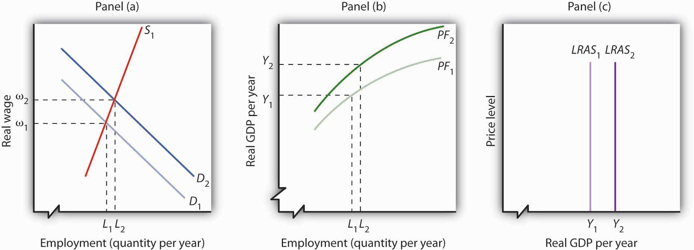
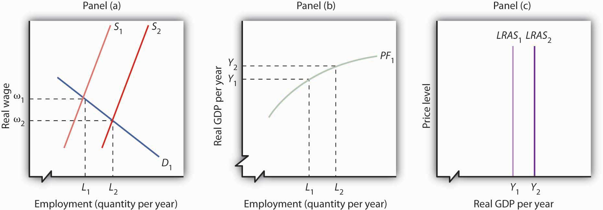

Economic growth means the economy’s potential output is rising. Because the long-run aggregate supply curve is a vertical line at the economy’s potential, we can depict the process of economic growth as one in which the long-run aggregate supply curve shifts to the right.
Figure 23.4 Economic Growth and the Long-Run Aggregate Supply Curve
Because economic growth is the process through which the economy’s potential output is increased, we can depict it as a series of rightward shifts in the long-run aggregate supply curve. Notice that with exponential growth, each successive shift in LRAS is larger and larger.
Figure 23.4 "Economic Growth and the Long-Run Aggregate Supply Curve" illustrates the process of economic growth. If the economy begins at potential output of Y1, growth increases this potential. The figure shows a succession of increases in potential to Y2, then Y3, and Y4. If the economy is growing at a particular percentage rate, and if the levels shown represent successive years, then the size of the increases will become larger and larger, as indicated in the figure.
Because economic growth can be considered as a process in which the long-run aggregate supply curve shifts to the right, and because output tends to remain close to this curve, it is important to gain a deeper understanding of what determines long-run aggregate supply (LRAS). We shall examine the derivation of LRAS and then see what factors shift the curve. We shall begin our work by defining an aggregate production function.
An aggregate production functionFunction that relates the total output of an economy to the total amount of labor employed in the economy, all other determinants of production (capital, natural resources, and technology) being unchanged. relates the total output of an economy to the total amount of labor employed in the economy, all other determinants of production (that is, capital, natural resources, and technology) being unchanged. An economy operating on its aggregate production function is producing its potential level of output.
Figure 23.5 "The Aggregate Production Function" shows an aggregate production function (PF). It shows output levels for a range of employment between 120 million and 140 million workers. When the level of employment is 120 million, the economy produces a real GDP of $11,500 billion (point A). A level of employment of 130 million produces a real GDP of $12,000 billion (point B), and when 140 million workers are employed, a real GDP of $12,300 billion is produced (point C). In drawing the aggregate production function, the amount of labor varies, but everything else that could affect output, specifically the quantities of other factors of production and technology, is fixed.
The shape of the aggregate production function shows that as employment increases, output increases, but at a decreasing rate. Increasing employment from 120 million to 130 million, for example, increases output by $500 billion to $12,000 billion at point B. The next 10 million workers increase production by $300 billion to $12,300 billion at point C. This example illustrates diminishing marginal returns. Diminishing marginal returnsSituation that occurs when additional units of a variable factor add less and less to total output, given constant quantities of other factors. occur when additional units of a variable factor add less and less to total output, given constant quantities of other factors.
Figure 23.5 The Aggregate Production Function
An aggregate production function (PF) relates total output to total employment, assuming all other factors of production and technology are fixed. It shows that increases in employment lead to increases in output but at a decreasing rate.
It is easy to picture the problem of diminishing marginal returns in the context of a single firm. The firm is able to increase output by adding workers. But because the firm’s plant size and stock of equipment are fixed, the firm’s capital per worker falls as it takes on more workers. Each additional worker adds less to output than the worker before. The firm, like the economy, experiences diminishing marginal returns.
To derive the long-run aggregate supply curve, we bring together the model of the labor market, introduced in the first macro chapter and the aggregate production function.
As we learned, the labor market is in equilibrium at the natural level of employment. The demand and supply curves for labor intersect at the real wage at which the economy achieves its natural level of employment. We see in Panel (a) of Figure 23.6 "Deriving the Long-Run Aggregate Supply Curve" that the equilibrium real wage is ω1 and the natural level of employment is L1. Panel (b) shows that with employment of L1, the economy can produce a real GDP of YP. That output equals the economy’s potential output. It is that level of potential output that determines the position of the long-run aggregate supply curve in Panel (c).
Figure 23.6 Deriving the Long-Run Aggregate Supply Curve
Panel (a) shows that the equilibrium real wage is ω1, and the natural level of employment is L1. Panel (b) shows that with employment of L1, the economy can produce a real GDP of YP. That output equals the economy’s potential output. It is at that level of potential output that we draw the long-run aggregate supply curve in Panel (c).
The position of the long-run aggregate supply curve is determined by the aggregate production function and the demand and supply curves for labor. A change in any of these will shift the long-run aggregate supply curve.
Figure 23.7 "Shift in the Aggregate Production Function and the Long-Run Aggregate Supply Curve" shows one possible shifter of long-run aggregate supply: a change in the production function. Suppose, for example, that an improvement in technology shifts the aggregate production function in Panel (b) from PF1 to PF2. Other developments that could produce an upward shift in the curve include an increase in the capital stock or in the availability of natural resources.
Figure 23.7 Shift in the Aggregate Production Function and the Long-Run Aggregate Supply Curve
An improvement in technology shifts the aggregate production function upward in Panel (b). Because labor is more productive, the demand for labor shifts to the right in Panel (a), and the natural level of employment increases to L2. In Panel (c) the long-run aggregate supply curve shifts to the right to Y2.
The shift in the production function to PF2 means that labor is now more productive than before. This will affect the demand for labor in Panel (a). Before the technological change, firms employed L1 workers at a real wage ω1. If workers are more productive, firms will find it profitable to hire more of them at ω1. The demand curve for labor thus shifts to D2 in Panel (a). The real wage rises to ω2, and the natural level of employment rises to L2. The increase in the real wage reflects labor’s enhanced productivityThe amount of output per worker., the amount of output per worker. To see how potential output changes, we see in Panel (b) how much output can be produced given the new natural level of employment and the new aggregate production function. The real GDP that the economy is capable of producing rises from Y1 to Y2. The higher output is a reflection of a higher natural level of employment, along with the fact that labor has become more productive as a result of the technological advance. In Panel (c) the long-run aggregate supply curve shifts to the right to the vertical line at Y2.
This analysis dispels a common misconception about the impact of improvements in technology or increases in the capital stock on employment. Some people believe that technological gains or increases in the stock of capital reduce the demand for labor, reduce employment, and reduce real wages. Certainly the experience of the United States and most other countries belies that notion. Between 1990 and 2007, for example, the U.S. capital stock and the level of technology increased dramatically. During the same period, employment and real wages rose, suggesting that the demand for labor increased by more than the supply of labor. As some firms add capital or incorporate new technologies, some workers at those firms may lose their jobs. But for the economy as a whole, new jobs become available and they generally offer higher wages. The demand for labor rises.
Another event that can shift the long-run aggregate supply curve is an increase in the supply of labor, as shown in Figure 23.8 "Increase in the Supply of Labor and the Long-Run Aggregate Supply Curve". An increased supply of labor could result from immigration, an increase in the population, or increased participation in the labor force by the adult population. Increased participation by women in the labor force, for example, has tended to increase the supply curve for labor during the past several decades.
Figure 23.8 Increase in the Supply of Labor and the Long-Run Aggregate Supply Curve
An increase in the supply of labor shifts the supply curve in Panel (a) to S2, and the natural level of employment rises to L2. The real wage falls to ω2. With increased labor, the aggregate production function in Panel (b) shows that the economy is now capable of producing real GDP at Y2. The long-run aggregate supply curve in Panel (c) shifts to LRAS2.
In Panel (a), an increase in the labor supply shifts the supply curve to S2. The increase in the supply of labor does not change the stock of capital or natural resources, nor does it change technology—it therefore does not shift the aggregate production function. Because there is no change in the production function, there is no shift in the demand for labor. The real wage falls from ω1 to ω2 in Panel (a), and the natural level of employment rises from L1 to L2. To see the impact on potential output, Panel (b) shows that employment of L2 can produce real GDP of Y2. The long-run aggregate supply curve in Panel (c) thus shifts to LRAS2. Notice, however, that this shift in the long-run aggregate supply curve to the right is associated with a reduction in the real wage to ω2.
Of course, the aggregate production function and the supply curve of labor can shift together, producing higher real wages at the same time population rises. That has been the experience of most industrialized nations. The increase in real wages in the United States between 1990 and 2007, for example, came during a period in which an increasing population increased the supply of labor. The demand for labor increased by more than the supply, pushing the real wage up. The accompanying Case in Point looks at gains in real wages in the face of technological change, an increase in the stock of capital, and rapid population growth in the United States during the 19th century.
Our model of long-run aggregate supply tells us that in the long run, real GDP, the natural level of employment, and the real wage are determined by the economy’s production function and by the demand and supply curves for labor. Unless an event shifts the aggregate production function, the demand curve for labor, or the supply curve for labor, it affects neither the natural level of employment nor potential output. Economic growth occurs only if an event shifts the economy’s production function or if there is an increase in the demand for or the supply of labor.
Suppose that the quantity of labor supplied is 50 million workers when the real wage is $20,000 per year and that potential output is $2,000 billion per year. Draw a three-panel graph similar to the one presented in Figure 23.8 "Increase in the Supply of Labor and the Long-Run Aggregate Supply Curve" to show the economy’s long-run equilibrium. Panel (a) of your graph should show the demand and supply curves for labor, Panel (b) should show the aggregate production function, and Panel (c) should show the long-run aggregate supply curve. Now suppose a technological change increases the economy’s output with the same quantity of labor as before to $2,200 billion, and the real wage rises to $21,500. In response, the quantity of labor supplied increases to 51 million workers. In the same three panels you have already drawn, sketch the new curves that result from this change. Explain what happens to the level of employment, the level of potential output, and the long-run aggregate supply curve. (Hint: you have information for only one point on each of the curves you draw—two for the supply of labor; simply draw curves of the appropriate shape. Do not worry about getting the scale correct.)
Technological change and the capital investment that typically comes with it are often criticized because they replace labor with machines, reducing employment. Such changes, critics argue, hurt workers. Using the model of aggregate demand and aggregate supply, however, we arrive at a quite different conclusion. The model predicts that improved technology will increase the demand for labor and boost real wages.
The period of industrialization, generally taken to be the time between the Civil War and World War I, was a good test of these competing ideas. Technological changes were dramatic as firms shifted toward mass production and automation. Capital investment soared. Immigration increased the supply of labor. What happened to workers?
Employment more than doubled during this period, consistent with the prediction of our model. It is harder to predict, from a theoretical point of view, the consequences for real wages. The latter third of the 19th century was a period of massive immigration to the United States. Between 1865 and 1880, more than 5 million people came to the United States from abroad; most were of working age. The pace accelerated between 1880 and 1923, when more than 23 million people moved to the United States from other countries. Immigration increased the supply of labor, which should reduce the real wage. There were thus two competing forces at work: Technological change and capital investment tended to increase real wages, while immigration tended to reduce them by increasing the supply of labor.
The evidence suggests that the forces of technological change and capital investment proved far more powerful than increases in labor supply. Real wages soared 60% between 1860 and 1890. They continued to increase after that. Real wages in manufacturing, for example, rose 37% from 1890 to 1914.
Technological change and capital investment displace workers in some industries. But for the economy as a whole, they increase worker productivity, increase the demand for labor, and increase real wages.
Sources: Wage data taken from Clarence D. Long, Wages and Earnings in the United States, 1860–1990 (Princeton, NJ: Princeton University Press, 1960), p. 109, and from Albert Rees, Wages in Manufacturing, 1890–1914 (Princeton, NJ: Princeton University Press, 1961), pp. 3–5. Immigration figures taken from Gary M. Walton and Hugh Rockoff, History of the American Economy, 6th ed. (New York: Harcourt Brace Jovanovich, 1990), p. 371.
The production function in Panel (b) shifts up to PF2. Because it reflects greater productivity of labor, firms will increase their demand for labor, and the demand curve for labor shifts to D2 in Panel (a). LRAS1 shifts to LRAS2 in Panel (c). Employment and potential output rise. Potential output will be greater than $2,200 billion.